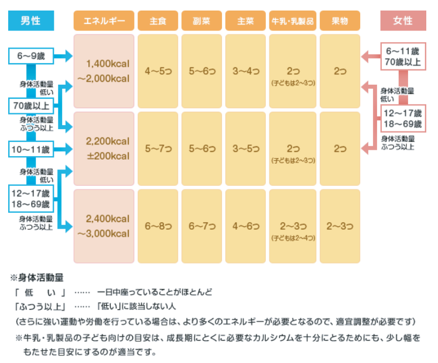

1日に必要なエネルギー
適量チェックチャート

出典：農林水産省「食事バランスガイドチェックシート」(2025年11月25日に利用)
（https://www.maff.go.jp/j/syokuiku/zissen_navi/yun/sheet.html）
適量チェックチャートとは？
適量チャートとは、性別、年齢、身体活動量に応じて、1日の食事の適量を調べるためのツールです。
自分の性別からチャートをスタートし、年齢、身体活動量をチェックし、適量を把握しましょう。
※適量は下部の適量チェックからも把握できます。